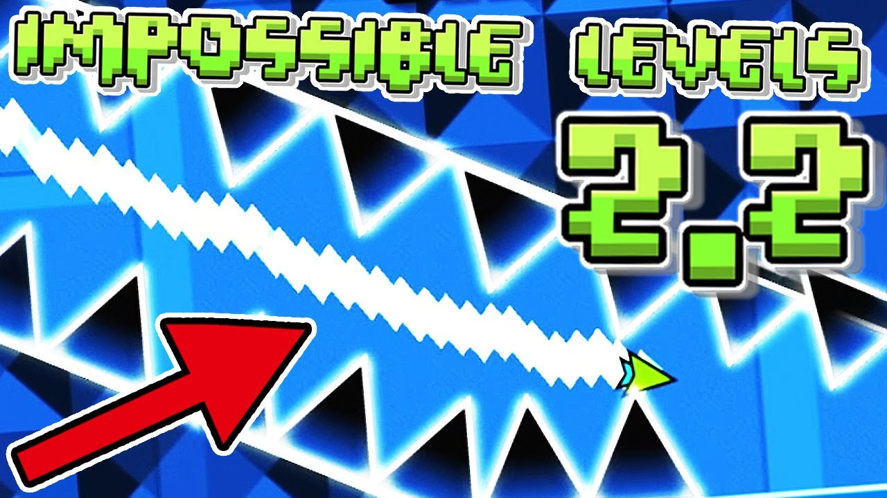

Welcome to Geometry Dash Spam
If you're searching for the ultimate challenge, look no further than Geometry Dash Spam. Our online version of Geometry Dash Spam is designed to test your skills, pushing you to spam your way through intense levels. Whether you're new to Geometry Dash Spam or a seasoned player, mastering the spam mechanics will elevate your gameplay.
The fast-paced action and relentless obstacles make Geometry Dash Spam one of the most exhilarating experiences available online. So, are you ready to conquer the world of Geometry Dash Spam? Start spamming now and prove your reflexes!
Geometry Dash Spam Online Game
Welcome to the ultimate Geometry Dash Spam experience! Dive into one of the most exciting and challenging rhythm-based platformer games directly in your browser. Whether you're a veteran Geometry Dash player or new to the concept, our online version of Geometry Dash Spam offers fast-paced gameplay that tests your precision, speed, and reflexes. Get ready to master the art of spamming as you navigate through a series of difficult obstacles and challenges.
What is Geometry Dash Spam?
At its core, Geometry Dash Spam refers to a specific playstyle that involves rapid and continuous tapping or pressing of a button to control the movements of your in-game character. Unlike standard Geometry Dash gameplay, where timing and precision are key, Geometry Dash Spam demands high-speed clicking or tapping to pass through intricate levels that require constant and intense inputs.
The term "spam" comes from the necessity to "spam" the controls, especially during tough sequences of spikes, blocks, and moving platforms. It's not just a test of rhythm but also of endurance and skill, making it a favorite challenge among hardcore players.
The History of Geometry Dash Spam
Origins of Geometry Dash Spam
Geometry Dash first launched in 2013, developed by Robert Topala and published by RobTop Games. It became an instant hit due to its unique combination of rhythm-based action and visually captivating platforming mechanics. Over the years, it evolved into one of the most iconic mobile and PC games, known for its hardcore difficulty levels and user-generated content. The community aspect of Geometry Dash is massive, with millions of players creating their own levels to challenge others.
Evolution of Spam Mechanics
As the game grew in popularity, so did the complexity of the user-generated levels. One sub-genre that emerged from this creativity is Geometry Dash Spam. Players started developing levels that required rapid clicking or tapping to survive, making the "spam" mechanic a hallmark of difficult levels. These levels push the limits of reaction speed and focus, offering a high-intensity experience for gamers who crave more than the standard rhythm platforming.
Now, in 2024, Geometry Dash Spam has developed into a distinct part of the Geometry Dash community, with players creating entire levels dedicated to testing their spamming abilities. Our Geometry Dash Spam Online brings this challenge directly to your browser for an adrenaline-pumping experience.
How to Play Geometry Dash Spam
Basic Controls
In Geometry Dash Spam, you control a small geometric shape (usually a square or spaceship) that automatically moves forward. Your goal is to guide it through a series of obstacles by clicking or tapping to make it jump or fly.
- Jump: Click or tap to make your character jump over obstacles.
- Fly: Hold to fly when in spaceship mode.
- Spam: Rapidly click or tap to pass through densely packed obstacles without crashing.
Pro Tip for Geometry Dash Spam
The secret to mastering Geometry Dash Spam lies in finding the right balance between speed and control. While you need to click or tap quickly, maintaining rhythm is equally important. Spamming too fast can cause you to overshoot jumps or miss important timing windows. Try to find a consistent rhythm that allows you to move through the levels smoothly.

Strategies for Mastering Geometry Dash Spam
- Practice Your Clicking Speed: The faster you can click or tap, the better you'll perform in Geometry Dash Spam levels. Practice using both hands or switching between different fingers to maximize your speed and precision. Many players recommend using gaming mice or mechanical keyboards to improve responsiveness.
- Memorize the Levels: One of the biggest advantages in Geometry Dash Spam is knowing what obstacles are coming up. Spend time memorizing the layout of the levels so you can anticipate where to spam clicks and when to hold back. This will help you react faster and avoid sudden crashes.
- Use Custom Levels: A great way to get better at Geometry Dash Spam is to play user-created levels designed specifically for spamming. These levels often feature intricate designs and fast-paced challenges that force you to hone your skills. You can also create your own custom levels to test your abilities and improve your spam technique.
- Focus on Timing: While spamming is all about speed, it's important to keep an eye on the timing of your taps. The key to success in Geometry Dash Spam is to maintain a steady rhythm, especially in levels where there are mixed sections of jumping and flying.
Why Geometry Dash Spam Is So Popular
The appeal of Geometry Dash Spam comes from its unique blend of difficulty and simplicity. The controls are easy to grasp, but the challenge lies in mastering the intense, fast-paced gameplay. For many players, Geometry Dash Spam offers a new level of excitement beyond the base game, making it perfect for those who enjoy testing their limits.
Competitive Nature
Many players in the Geometry Dash community love pushing themselves to the edge, and Geometry Dash Spam offers exactly that. The ability to compare high scores, complete impossible levels, and share replays makes it a highly competitive and engaging experience. The game's leaderboard system adds another layer of excitement, as players strive to achieve the best spam scores.
Addictive Gameplay
The simplicity of Geometry Dash Spam mechanics—clicking and tapping—combined with its intense difficulty curve creates an addictive feedback loop. Every failed attempt pushes players to try again, eager to master the level and beat their own best scores.
Play Geometry Dash Spam Online for Free
Our version of Geometry Dash Spam brings the classic spam mechanics you love into an accessible online format. Just open your browser, and you're ready to start playing without any downloads or installations. Whether you're looking for a quick challenge during a break or a long session to master difficult levels, Geometry Dash Spam Online has something for every player.
Conclusion: Why You Should Try Geometry Dash Spam Online
If you're a fan of fast-paced rhythm platformers, Geometry Dash Spam is a must-try experience. The thrill of navigating through tough levels while spamming your way past obstacles will keep you coming back for more. With our online version, you can jump right into the action from your browser, without any need for downloads.
So what are you waiting for? Start playing Geometry Dash Spam today and see if you have what it takes to master the art of spam!